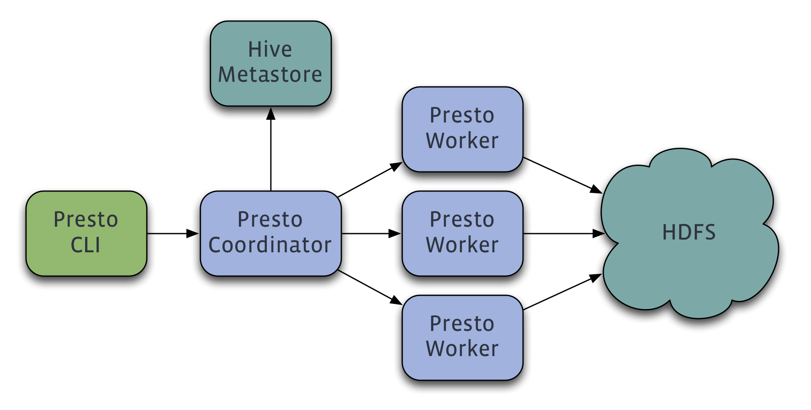

Presto is a distributed system that runs on a cluster of machines. A full installation includes a coordinator and multiple workers. Queries are submitted from a client such as the Presto CLI to the coordinator. The coordinator parses, analyzes and plans the query execution, then distributes the processing to the workers.
Presto has a few basic requirements:
Presto supports pluggable connectors that provide data for queries. The requirements vary by connector.
Presto supports reading Hive data from the following versions of Hadoop:
The following file formats are supported: Text, SequenceFile, RCFile, ORC and Parquet.
Additionally, a remote Hive metastore is required. Local or embedded mode is not supported. Presto does not use MapReduce and thus only requires HDFS.
Cassandra 2.x is required. This connector is completely independent of the Hive connector and only requires an existing Cassandra installation.
The TPC-H connector dynamically generates data that can be used for experiementing with and testing Presto. This connector has no external requirements.
See Deploying Presto for complete deployment instructions.
You can run queries using the Command Line Interface after deploying Presto.